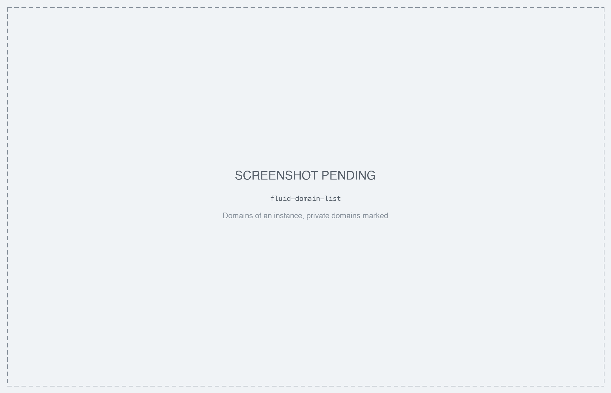

14 Identity and access
Every action on a shared instance has a name attached, and the name is a person’s. Chapter 7 ended on that line, and this chapter is what follows from taking it seriously: who is acting when an engram changes, who may see a domain and who may change it, how a login at the company’s identity provider becomes an account here, what the rules cover and the few things you do on an ordinary Tuesday. It ends where the whole book has been walking: a colleague who has earned access, by name.
14.1 Who is acting
People arrive as accounts, by whichever of chapter 7’s doors they came through, and once inside there is one account with one role, viewer, editor or admin, and everything the person does is done as it (Chapter 7).
Agents arrive as somebody’s agent. Chapter 7 issued the token; what the token means is the point here. An authenticated agent is its user for the length of the session, with that person’s visibility, that person’s write rights, that person’s share identity in a team domain, and that person’s name in the provenance of everything it captures, beside the client that acted. Programs in Tron look like their users and act for them, and that is the picture: the agent’s name is its user’s name with an agent designation after it. The CLI and a stdio session on the server stay the machine’s owner, as chapter 7 said.
The token’s lifecycle is what makes the arrangement safe, and it is worth walking once. It is minted on the profile’s Agent access card, or by an admin with crystalline users mcp-token <name>, and it begins with a fixed prefix, so a leaked one is recognizable in a log and findable with grep across a repository or a chat export. It is shown once, and what the instance keeps is a hash, so a copied accounts database yields no working credential. It lives in exactly one place after that, the Authorization: Bearer header of the harness’s MCP registration on the person’s own machine. It has no expiry of its own, because on a self-hosted instance revocation is the story. Every request looks the token up, so a revoked token fails on the next call. Rotation issues the replacement and revokes the old one in one motion, so the registration is updated in one edit and nothing is ever half-rotated. Every account may issue its own, viewers included, and that leaks no capability: a viewer’s agent is read-only by construction, because it is a viewer.
14.2 Membership on a private domain
A domain is visible to every signed-in user unless it is made private, and chapter 7 said who sees it then: the owner, the instance’s admins and invited members at one of three levels, viewer, editor or manager. The top rung deserves a word. A manager runs the membership, inviting, removing and granting any level up to manager itself, which is the job of a lead who should not have to fetch the owner for every new joiner. What a manager cannot do is change the domain’s visibility, transfer it or delete it, because a manager who could flip a domain public would be an owner by another name. Those three stay with the one owner and with the admins, so that a domain always has exactly one person answerable for its existence, and a way to recover it when that person leaves.
Two of chapter 7’s truths carry over unchanged, and the toggle in Fluid prints the second: admins see every domain, private ones included, and a private domain protects from the instance’s other users, never from whoever operates the machine.
The instance role and the membership level are different questions, and inside a private domain the level wins: the refusal a member gets names the level the domain requires.
14.3 Linking identities
A team that adopts single sign-on after running local accounts for a while has a linking problem: Ripley has an account named ripley and an identity at the provider, and they should be one person. The tempting answer is to match on email, and it is the classic foot-gun of this integration, which is why Crystalline refuses it. An email address is presentation: the provider asserts it, the person can change it and matching on it would let whoever controls an address at the provider walk into the local account that happens to carry the same one. The address is often not even the person’s to keep: a provider that lets people edit their own email, or a second provider added a year later, is all it takes. Chapter 7 gave the rule that follows, issuer and subject and nothing else, so the sign-in gets a fresh account and joining the two is an explicit act with a name on it. The signed-in local user links from the SSO identity section of their profile; an admin does it from the terminal, crystalline users link ripley --issuer <issuer> --subject <subject>, which is also how an admin repairs links after a provider re-registration changes every subject. Unlinking refuses when it would leave an account with no way in, and an identity already linked to another account is never taken by a second link; an admin moves it.
14.4 What the rules cover
A rule that covers most surfaces covers none, because the agent will find the one it misses. Visibility follows the caller onto every read surface there is: search, read_engram, build_context, recent_activity, the routing briefing at session start, the graph, exports, the maintenance sweep and Fluid’s domain list and tree. To someone who may not see a domain it is absent, answered exactly as a domain that was never registered would be, for the reason chapter 7 gave. Writes check for editor or better. An agent inherits all of it from its user and administers none of it: there is no tool for changing a membership, on purpose, so a persuasive prompt cannot talk an agent into inviting itself. On an instance that leaves agent authentication off, the open tier that remains sees only the domains everyone sees. A private domain with a team origin is two questions: who may see it here is the instance’s, and who may push to the repository is the forge’s.
14.5 Day to day
Most of this is a card. A domain’s settings in Fluid carry a Members card: the members with their level badges, an invite box that takes a username and a level, remove, leave, and, for the owner or an admin, transfer. The domain list marks private domains with a badge (Figure 14.1). The terminal does the same for a script or an admin already there: crystalline domain members board list, crystalline domain members board add lambert --level viewer, crystalline domain members board remove lambert, crystalline domain visibility board private and crystalline domain transfer board ripley. The CLI is the machine operator and passes no role gate.

A year of running a domain comes down to inviting, promoting and handing over. Inviting is the card or the add verb, at the level the person needs today, which is usually viewer; leaving is the member’s own button, no manager required. Promoting is setting the level again, viewer to editor when their captures have earned it, editor to manager when they should be the one inviting. Handing over is transfer, for the day the owner leaves: the new owner is the owner from that moment, and the old one is a stranger to the domain unless re-invited. When they do leave, an admin disables or deletes the account, and deleting sweeps everything the account had: its agent tokens, its identity links, its personal share credential. The agent that acted as that person is refused at the door on its next request, like any other stranger.
Gaff joins Tyrell in September on a six-month contract to help with the broker migration. He signs in on his first morning with the company login and lands as a viewer, the role the instance gives every first sign-in. He issues himself a token on his profile and pastes it into his harness, and his agent is a viewer from its first call, reading engineering and clients and writing nowhere, without anyone having configured a thing about agents. By the third week the notes he keeps sending Ripley to capture for him are the best anyone has on the new broker, and she promotes him to editor. The next capture his agent makes lands in engineering under his name, with his harness named as the client in the provenance.
In December Dallas takes a sabbatical and transfers board to Ripley from the Members card, then finds he can no longer see it, which is what he wanted; he never wanted an admin login either, and now he needs none. In March Gaff’s contract ends and Ripley deletes his account. His token dies with it; his agent’s next session is refused before it opens. His engrams stay, every one recording that his agent wrote it for him, and in April a new hire’s agent recalls Gaff’s account of the broker cutover in a session that never heard his name.
Accounts, agent tokens, identity links, domain visibility and membership all live in one small database beside the index, and none of it is derived, so no rebuild of the index can touch it and a wipe and resync leaves every permission where it was. Each request resolves the caller once, into a scope: the machine owner for the CLI and stdio, an account with its admin flag for a Fluid session or an authenticated agent, an anonymous tier for a published archive, or an agent where authentication is off. Every engine verb filters on that scope, so a surface added tomorrow is filtered the way search is filtered today.
A new hire earns access a door at a time: a badge on the first day, a room the next week and after a while nobody remembers the meeting where they were let in. The agent walks the same doors, by name, and everything it has ever captured says whose colleague it was.
People act as accounts and agents act as their user, through a per-user token that is shown once, stored hashed, revoked in one motion and issuable by everyone; the CLI and stdio are the machine owner. A private domain is visible to its owner, the instance’s admins and invited members at viewer, editor or manager level, with visibility, transfer and deletion reserved to the owner and admins, and it protects from other users rather than from whoever runs the machine. Identities link explicitly, keyed on issuer and subject, never by email. Visibility is enforced on every read surface and a hidden domain reads as absent; writes need editor or better; agents inherit and never administer. Invite, promote and transfer from the Members card or the crystalline domain verbs, and delete an account to take everything it held with it.